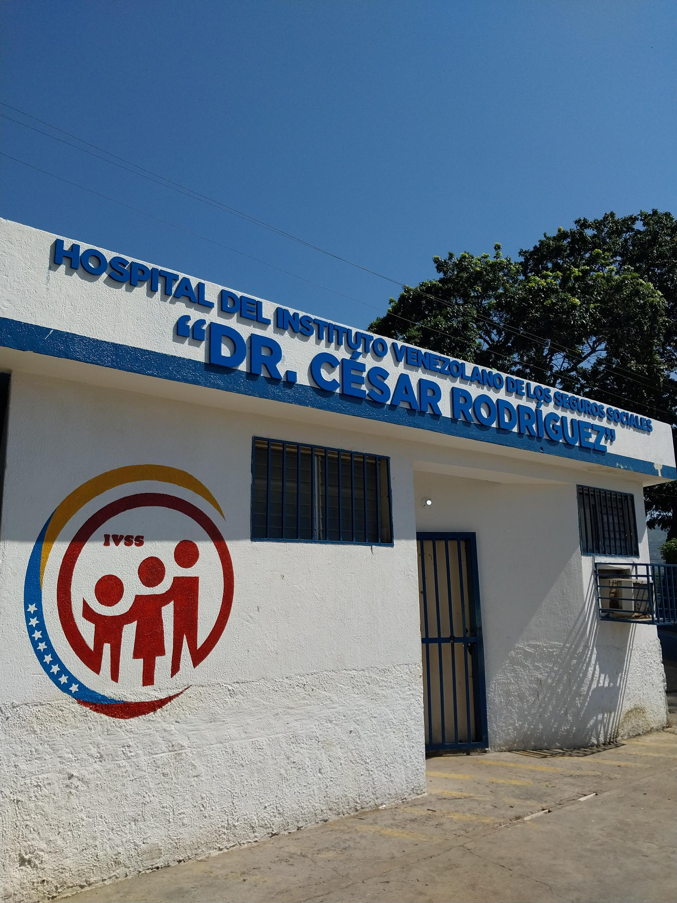
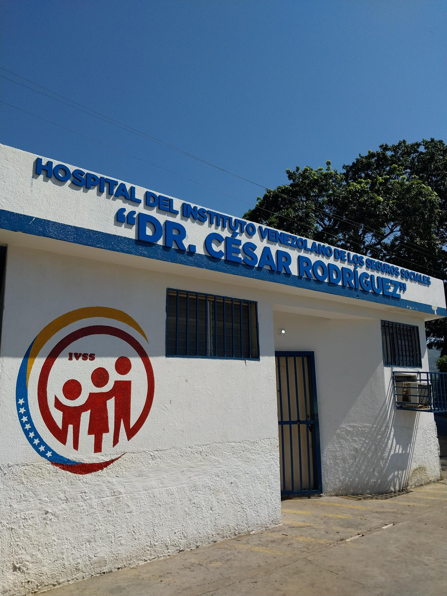

La historia del hospital se remonta a su fundación por la Mene Grande Oil Company en Barcelona, bajo la dirección del Dr. Gualberto Rossi. El 18 de octubre de 1944, se trasladó a un nuevo edificio en el Campo Guaraguao de Puerto La Cruz, donde el Dr. Felipe Iriarte asumió la dirección y la Sra. Josefina Zabala lideró el equipo de enfermería. En 1965, se estableció el Seguro Social en Anzoátegui, convirtiéndose en el primer hospital del Instituto Venezolano de los Seguros Sociales en la región, gracias a las donaciones de Mene Grande Oil Company y el compromiso de integrar parte de su personal. Inicialmente, contaba con sesenta camas, pero con el tiempo se expandió a doscientas, adaptándose a las crecientes demandas de atención médica.
A lo largo de los años, el hospital ha evolucionado en sus instalaciones y en la atención que brinda, desarrollando un programa integral que involucra a pacientes, familias y la comunidad. En 1983, se renombró en honor al Dr. César Rodríguez Rodríguez, un destacado médico cirujano oriundo de Anzoátegui. En sus inicios, el centro ofrecía solo un número limitado de especialidades médicas y carecía de equipos avanzados, con el personal médico y de enfermería luchando para salvar vidas en condiciones difíciles. Aunque no contaba con unidades de terapia intensiva, la dedicación del equipo permitía que muchos pacientes se recuperaran gracias a su esfuerzo y compromiso.
 

Ubicado en Puerto La Cruz, Estado Anzoátegui, Guaraguao
Contenido de la sección Jornadas. Aquí puedes agregar la información que desees presentar.